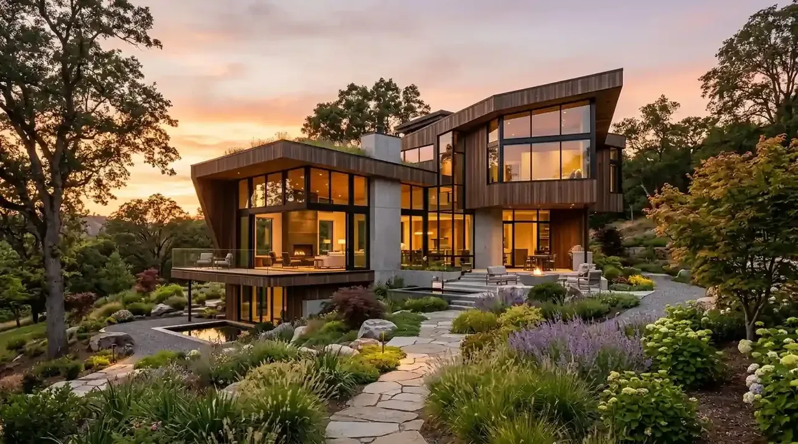

Apa Saja Batasan Renovasi Rumah Subsidi yang Diatur Kementerian PUPR?
Batasan renovasi rumah subsidi mencakup larangan membongkar fasad depan, larangan membuat bangunan 2 lantai sebelum 5 tahun, dan kewajiban mempertahankan fungsi hunian utama.
Perumahan subsidi skema Fasilitas Likuiditas Pembiayaan Perumahan (FLPP) dirancang oleh pemerintah melalui Kementerian Pekerjaan Umum dan Perumahan Rakyat (PUPR) untuk membantu Masyarakat Berpenghasilan Rendah (MBR). Berdasarkan Keputusan Menteri PUPR No. 242/KPTS/M/2020 tentang Petunjuk Pelaksanaan Pembiayaan Perumahan, rumah subsidi harus dihuni sendiri secara aktif dan tidak boleh dipindahtangankan atau diubah bentuk luarnya secara radikal sebelum cicilan genap 5 tahun.
Data dari Direktorat Jenderal Pembiayaan Infrastruktur Pekerjaan Umum dan Perumahan (Evaluasi Kepatuhan Debitur FLPP 2024) menunjukkan bahwa sebanyak 14,2% temuan audit perumahan subsidi bersumber dari pelanggaran renovasi ekstrim, seperti mengubah rumah menjadi ruko komersial atau merombak total muka rumah hingga tidak mencerminkan bentuk aslinya saat akad kredit.
Bagian yang DIPERBOLEHKAN direnovasi pada rumah subsidi sejak awal serah terima kunci:
- Pembangunan Dapur Belakang: Memanfaatkan sisa tanah belakang untuk mendirikan dinding dapur, tempat cuci (laundry area), dan ventilasi udara.
- Pemasangan Pagar & Gerbang: Membangun pagar batas tanah samping dan gerbang depan dengan ketinggian wajar tanpa menutup tampak fasad.
- Pemasangan Kanopi Carport: Memasang kanopi baja ringan atau hollow galvanis untuk pelindung kendaraan dari panas dan hujan.
- Perbaikan Kualitas Material Interior: Mengganti lantai keramik standar dengan granit tile, menambahkan plafon gypsum, atau mengecat ulang dinding interior.
Mengapa Prosedur Izin Renovasi Rumah KPR Wajib Diketahui Sebelum Mulai Konstruksi?
Prosedur izin renovasi rumah KPR wajib diketahui untuk memastikan status agunan bank tetap aman dan tidak melanggar perjanjian kredit yang sedang berjalan.
Saat rumah masih dalam masa angsuran KPR aktif di bank penyalur (seperti Bank BTN, BRI, Mandiri, atau BNI), sertifikat tanah dan IMB/PBG asli berada dalam penguasaan bank sebagai jaminan hutang (collateral). Secara kontraktual, setiap perubahan struktural yang berpotensi mengubah nilai taksasi (appraisal) agunan atau membahayakan kestabilan fisik bangunan idealnya dilaporkan kepada pihak bank pemberi kredit.
- Notifikasi ke Pihak Bank: Menyampaikan surat pemberitahuan rencana renovasi beserta denah kerja sederhana untuk rumah yang masih dalam masa KPR.
- Surat Izin Pengembang (Developer): Meminta rekomendasi pengelola perumahan terkait batas saluran air kotor (drainase) dan keamanan dinding kopel bersama (party wall).
- Izin Tetangga & RT/RW: Surat persetujuan tetangga bersebelahan guna mengantisipasi kebisingan dan penempatan material selama masa konstruksi.
- Persetujuan Bangunan Gedung (PBG): Diperlukan apabila renovasi menambah luas lantai bangunan pada rumah non subsidi.
Pada rumah non subsidi, izin dari pengembang biasanya hanya berlaku selama masa pemeliharaan fasilitas umum (estate management). Setelah itu, pemilik bebas mengurus izin penambahan lantai melalui portal resmi SIMBG tanpa terikat batas waktu 5 tahun cicilan.
Bagaimana Perbandingan Fleksibilitas Desain Rumah Subsidi vs Non Subsidi?
Perbandingan fleksibilitas desain memperlihatkan rumah non subsidi memberikan kebebasan mutlak perombakan arsitektur, sedangkan rumah subsidi menuntut kepatuhan koridor regulasi ketat.
Rumah subsidi biasanya dibangun dengan sistem dinding kopel (satu dinding untuk dua rumah bertetangga) dan pondasi batu kali dangkal dengan spesifikasi beban 1 lantai. Menambah lantai kedua secara sembarangan tanpa suntik pondasi cakar ayam (strauss pile) dapat merusak struktur dinding rumah tetangga sebelah. Sebaliknya, rumah non subsidi kelas menengah atas umumnya telah dilengkapi dinding ganda (double wall) dan mutu struktur beton yang siap dikembangkan secara vertikal (growing house).
| Aspek Perbandingan | Renovasi Rumah Subsidi (FLPP) | Renovasi Rumah Non Subsidi (Komersial) |
|---|---|---|
| Perubahan Fasad Depan | Dilarang merombak total sebelum 5 tahun cicilan | Bebas merombak total sesuai selera arsitektur |
| Penambahan Lantai (Tingkat 2) | Hanya boleh setelah 5 tahun cicilan berjalan | Boleh langsung ditingkat dengan izin PBG aktif |
| Pemanfaatan Ruang Usaha | Dilarang dialihfungsikan murni menjadi toko/ruko | Diperbolehkan sesuai izin zonasi tata ruang |
| Kondisi Dinding Pembatas | Umumnya dinding tunggal (kopel bersama tetangga) | Umumnya dinding ganda (double wall independen) |
| Fleksibilitas Anggaran | Fokus pada fungsionalitas dapur & kanopi (hemat) | Bebas upgrade interior mewah, fasad tropis & kolam |
Menurut laporan Real Estate Indonesia (REI Consumer Housing Insight 2025), 82% pembeli rumah komersial langsung mengalokasikan anggaran renovasi tambahan berkisar antara 25% hingga 40% dari harga beli unit untuk menyesuaikan estetika interior dan tata ruang keluarga sejak serah terima fisik pertama.
Berapa Estimasi Anggaran dan Biaya Renovasi Rumah Subsidi vs Non Subsidi?
Estimasi biaya renovasi rumah subsidi berkisar antara Rp 20 juta hingga Rp 65 juta, sedangkan renovasi rumah non subsidi berkisar Rp 80 juta hingga di atas Rp 300 juta tergantung lingkup pekerjaan.

Desain renovasi total rumah non subsidi dengan fasad modern minimalis, kisi-kisi aluminium, dan pencahayaan aksen mewah.
1. Estimasi Paket Renovasi Rumah Subsidi (Tipe 28/60 atau 36/60)
- Paket Dapur Tertutup & Tempat Cuci: Dinding bata ringan, meja kompor cor granit, sink cuci piring, atap spandek berperedam/rooftop (Rp 18.000.000 - Rp 28.000.000).
- Paket Kanopi & Carport Cor Rabat: Rangka hollow galvanis atap alderon/solarflat, lantai semen motif/keramik outdoor (Rp 8.500.000 - Rp 15.000.000).
- Pagar Depan & Gerbang Minimalis: Rangka besi hollow dan ornamen cutting laser woodplank (Rp 6.000.000 - Rp 12.000.000).
2. Estimasi Paket Renovasi Rumah Non Subsidi (Tipe 45/90 ke Atas)
- Renovasi Fasad Modern Tropis: Pemasangan bata roster, kisi-kisi conwood, batu alam andesit, pencahayaan LED warm white (Rp 35.000.000 - Rp 75.000.000).
- Penambahan Lantai 2 Total: Suntik pondasi footplat, dak lantai hebel/bondek cor K250, 2 kamar tidur tambahan, 1 kamar mandi (Rp 150.000.000 - Rp 350.000.000).
- Re-layout Interior & Kitchen Set: Pembongkaran sekat partisi, konsep open space living room, plafon drop ceiling (Rp 45.000.000 - Rp 120.000.000).
Mengapa Menggunakan Kontraktor Berpengalaman Mencegah Sanksi Pencabutan Subsidi KPR?
Menggunakan jasa kontraktor berpengalaman memastikan renovasi Anda mematuhi batas regulasi PUPR, tidak merusak struktur rumah tetangga, serta memiliki garansi pemeliharaan tertulis.
Banyak pemilik rumah subsidi tergiur menggunakan tukang harian lepasan tanpa kontrak kerja jelas, yang berakibat pada pembongkaran dinding pembatas bersama secara sepihak. Hal ini kerap memicu sengketa antar-warga perumahan, kebocoran talang bersama, hingga laporan debitur ke pihak bank penyalur.
Dengan mempercayakan renovasi kepada Kontraktor Bangunan, seluruh tahapan dikerjakan dengan standar teknis yang aman, schedule kerja disiplin, serta pemahaman regulasi perumahan yang melindungi hak kepemilikan Anda.
Paket Renovasi Rumah Aman, Legal, dan Bergaransi dari Kontraktor Bangunan
Apakah Anda baru saja menerima kunci rumah subsidi atau ingin meremajakan rumah non subsidi keluarga?
Kontraktor Bangunan menyediakan layanan renovasi rumah komprehensif mulai dari perencanaan arsitektur, perhitungan RAB transparan, hingga pelaksanaan konstruksi di lapangan.
Keuntungan memilih layanan renovasi kami:
- Survei & Desain 3D Gratis: Konsultasi tata letak ruang dan visualisasi desain tanpa dipungut biaya awal.
- Kepatuhan Regulasi & KPR: Rekomendasi teknis yang aman dari sanksi perbankan dan aturan tata kota perumahan.
- Sistem Pembayaran Bertahap (Termin): Pembayaran disesuaikan dengan progres opname fisik di lapangan, menjamin keamanan dana Anda.
- Sertifikat Garansi Konstruksi: Jaminan pemeliharaan purna jual terhadap kebocoran atap, retak dinding, dan instalasi sanitasi.
Pertanyaan yang Sering Diajukan (FAQ)
Kesimpulan Praktis
Renovasi rumah impian tidak boleh menjadi beban masalah hukum di kemudian hari. Kenali batasan tipe hunian Anda dan wujudkan perluasan ruang yang kokoh, nyaman, serta estetik bersama tenaga ahli bersertifikasi. Jadwalkan survei lokasi Anda sekarang secara gratis!